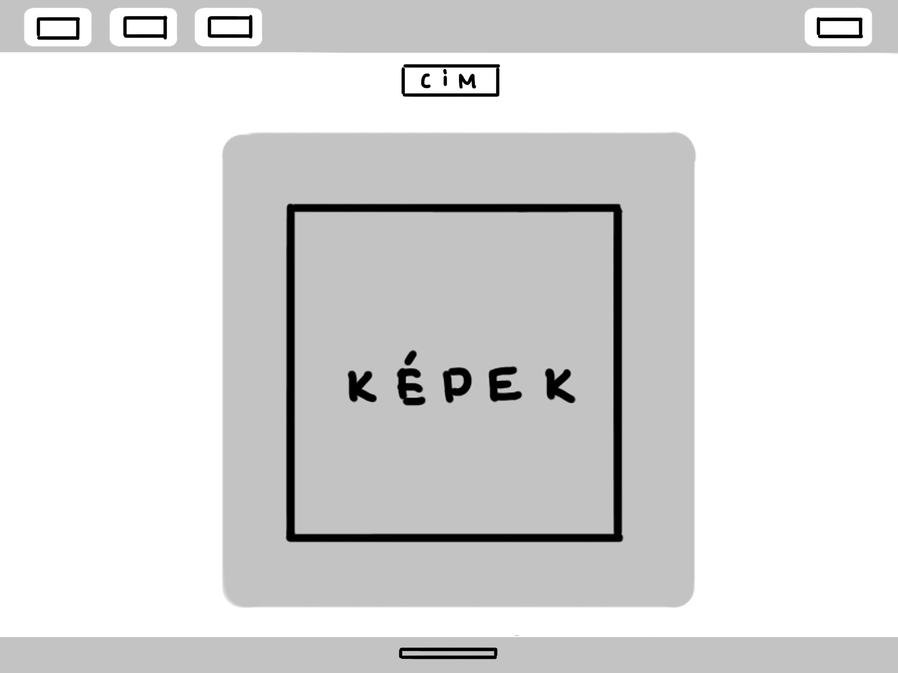

Dokumentáció
A weboldal terve:
A célom az oldal tervezése során egy egyszerű, jól átlátható, könnyen navigálható és kellemes beütésű weboldal készítése volt.
Az oldal tervezésének az alapját a fehér, a világosszürke és a világoskék harmóniája adja, amiknek a váltogatásával kellemesen el lehet választani az oldal különböző elemeit egymástól. Az oldalt tovább egyszerűsítik a formák, javarészt csak lekerekített sarkú téglalapokból áll.
Ez volt a főoldal eredeti terve:

A képen látható, hogy a főoldal 3 elemből lett összerakva:
A fenti sávból, ahol egyszerűen lehet az oldalak között navigálni, mivel az minden oldalon változatlan marad.
A közéspő tartalom részből, amiben egy ráccsal lett megoldva a különböző formátumú tartalmak elválasztása.
És az oldal alján a láblécből, aminek a közepére egy órát tettem volna.
A következő terv a képeket tartalmazó oldalt ábrázolja:

Ezután a Kapcsolat oldal következett:

A tervtől való eltérés:
Az eredeti ötlettől eltértem mivel nem értettem eléggé a html és css-hez.
A láblécet ahol az óra lett volna sikerült megcsinálni, viszont magát az órát nem. Más unalmas tartalmat pedig már nem akartam odatenni, ezért inkább nem csináltam meg.
Az első képen, a főoldal és a kapcsolat oldal tervein látszik, hogy a képet és a szöveget a rácsban 1/3 kép - 2/3 szöveg arányban szerettem volna elosztani, viszont nem sikerült megoldani, hogy ezek más felbontású kijelző esetén egymás alá rendezve azonos szélességűek legyenek. A megoldás erre a problémára az azonos szélesség alkalmazása volt.
A legutolsó változtatás az egy árnyalattal világosabb szürke és a világoskék használata, mivel az eredetinél ez sokkal barátságosabbnak és színesebbnek tűnt.
Nehézséget az okozott a leginkább a tetsző színek és az egyszerű formák kiválasztása.
Felhasznált weboldalak:
w3schools.com
hexcolortool.com
github.com